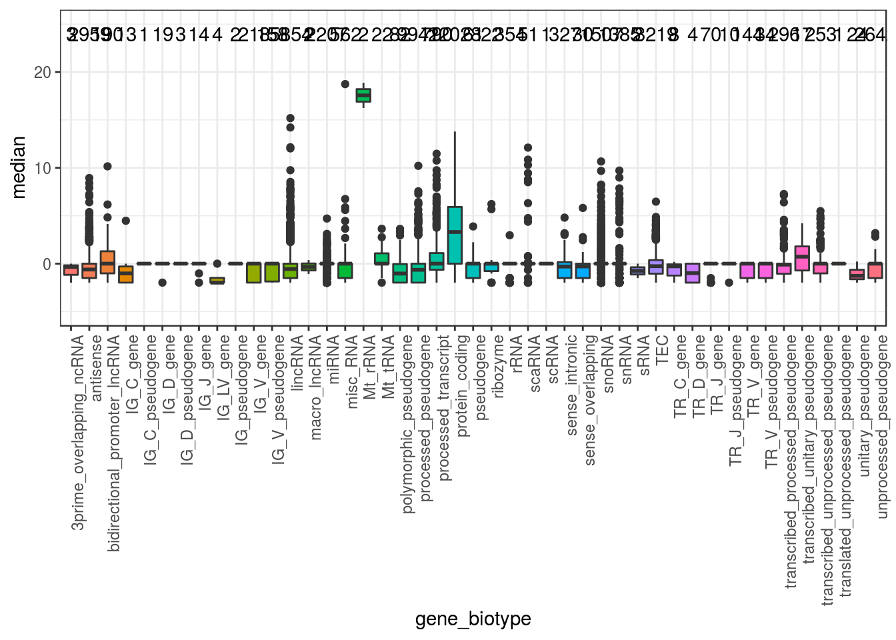
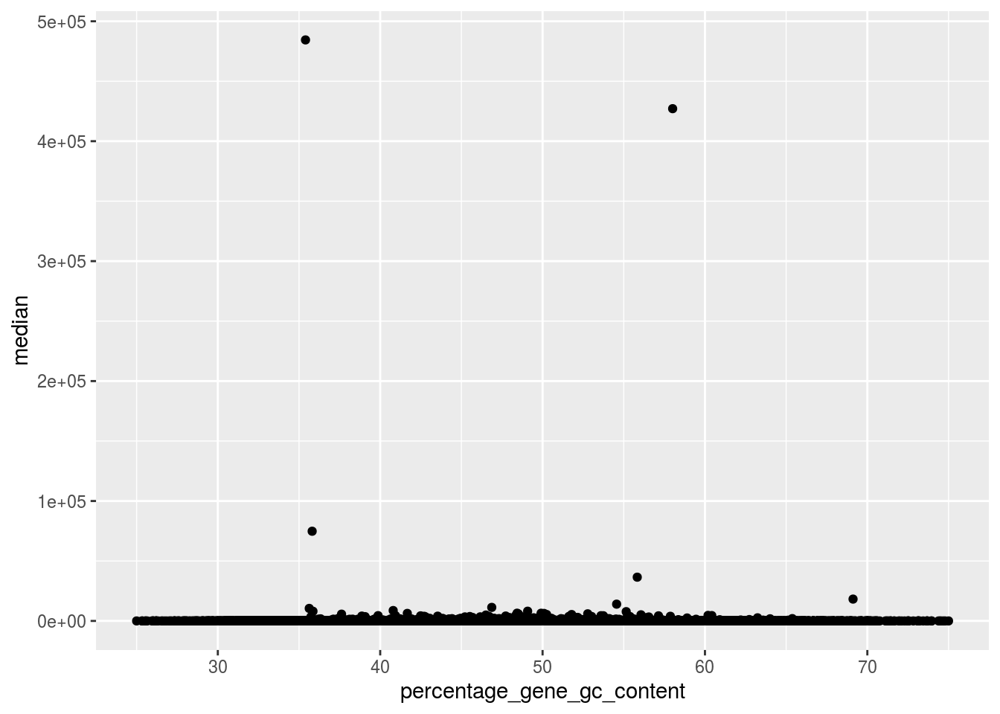
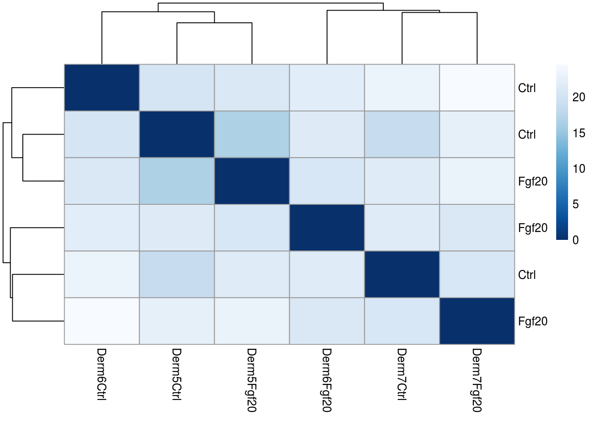
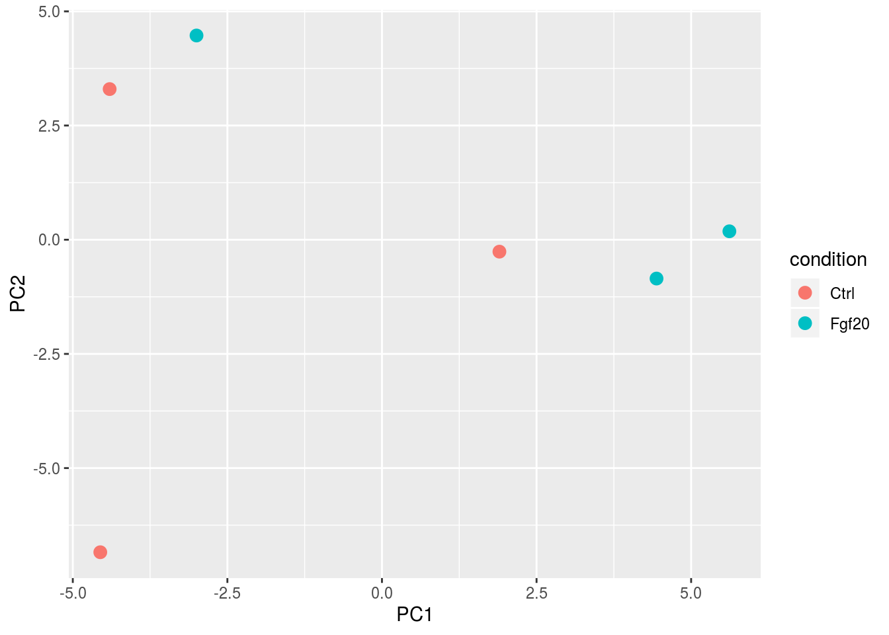
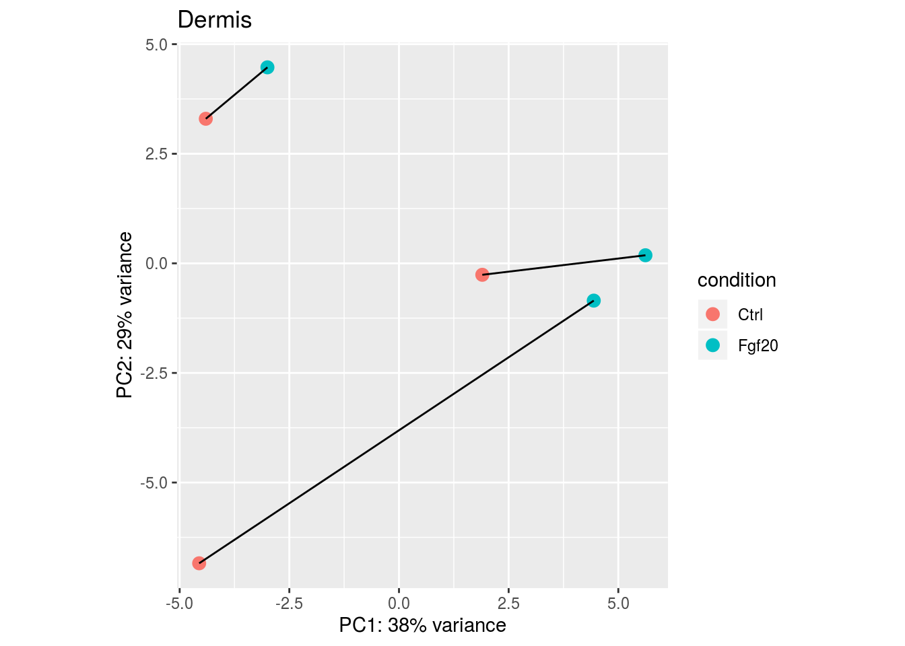
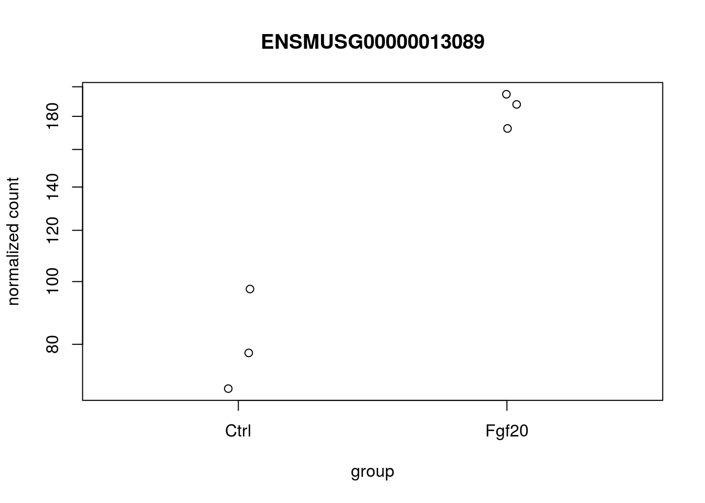

3 Read count analysis
In this session, we walk through a gene-level RNA-seq differential expression analysis, as well as a differential exon usage analysis, using Bioconductor packages. Bioconductor has many packages supporting analysis of high-throughput sequence data, including RNA-seq. The packages which we will use in this tutorial include core packages maintained by the Bioconductor core team for importing and processing raw sequencing data and loading gene annotations. We will also use contributed packages for statistical analysis and visualization of sequencing data.
3.0.1 Data from Taito
First we nead to transfer the $WRKDIR/DONOTREMOVE/day7/RNAseq_exercise/readCount directory from Taito to local computer. We can do it by login to sui.csc.fi or winscp. First create a directory GMB-203 in your local computer and copy the readCount directory in this folder. Also download Resource for exercise file to GMB-203 directory to define the experiment.
Now open Rstudio and set working directory from “Session > Set Working Directory > Choose Directory” to GMB-203
3.0.2 Reading the metadata
## The first column is the sample name, the second column is the file name
## of the count files generated by htseq-count, and the remaining columns
## are sample metadata which will be stored in colData
sampleMetaData <- read.csv("sample_description.csv",header = TRUE)3.0.3 Summarizing an RNA-seq experiment as a count matrix
Count-based statistical methods such as DESeq2 (Love, Huber, and Anders 2014), edgeR (M. D. Robinson, McCarthy, and Smyth 2009), limma with the voom method (Law et al. 2014), DSS (H. Wu, Wang, and Wu 2013), EBSeq (Leng et al. 2013), BaySeq (Hardcastle and Kelly 2010) and DEXSeq (Anders, Reyes, and Huber 2012) expect input data as obtained, e.g., from RNA-seq or another high-throughput sequencing experiment in the form of a matrix of integer values, or “counts”. The value in the i-th row and the j-th column of the matrix tells how many reads (or fragments, for paired-end RNA-seq) have been assigned to feature i in sample j. For RNA-seq, a feature is typically a gene, a transcript or an exon.
The fact that the values in the matrix are counts of sequencing reads (in the case of single-end sequencing) or fragments (for paired-end sequencing) is important for the count-based statistical models, e.g. DESeq2 or edgeR, as only the counts allow assessing the measurement precision correctly. It is important to never provide counts that have been normalized for sequencing depth/library size to these packages, as the statistical model is most powerful when applied to counts, and is designed to account for library size differences internally.
3.0.4 Installation
First we will install Bioconductor and DESeq2 packages.
if (!requireNamespace("BiocManager", quietly = TRUE)) {
install.packages("BiocManager",repos = "http://cran.us.r-project.org")
}
if (!requireNamespace("DESeq2", quietly = TRUE)) {
BiocManager::install("DESeq2")
}3.0.5 htseq-count
htseq-count outputs a text file for each sample, containing the observed read count for each gene. It is worth noticing that the last five rows in these text files do not correspond to genes, but summarize the number of reads that were not assigned to genes for various reasons. We do not want to include these lines in the count matrix.
It is of course possible to manually read the text files into R, remove the lines not corresponding to genes and merging the count vectors for all the samples into one count matrix. However, the DESeq2 package contains a function for constructing a DESeqDataSet directly from the output of htseq-count, and we will illustrate the use of it here (a more thorough description of the DESeqDataSet class is given below, for now it is enough to know that it is an example of a class where one can store all the information associated with an RNA-seq experiment). We need to provide the function with a sample table, where the first column is the sample name and the second is the name of the corresponding output file from htseq-count. Additional columns can be specified as well, and will be stored in the DESeqDataSet object.
In this example we have already made the sample table sampleMetaData.
suppressPackageStartupMessages(require(DESeq2))
ddsHTSeq <- DESeqDataSetFromHTSeqCount(sampleTable = sampleMetaData,
directory = "readCount/",
design= ~ pair+condition)
ddsHTSeq## class: DESeqDataSet
## dim: 55536 6
## metadata(1): version
## assays(1): counts
## rownames(55536): ENSMUSG00000000001 ENSMUSG00000000003 ...
## ENSMUSG00000118392 ENSMUSG00000118393
## rowData names(0):
## colnames(6): Derm5Ctrl Derm5Fgf20 ... Derm7Ctrl Derm7Fgf20
## colData names(2): pair condition3.1 QC
We have seen in fastqc reports the presence of dual peaks in Per Sequence GC Content and high GC rich reads. We will measure the median expression of each gene and its corresponding “gc percentage”.
### Obtaining log transformed count values and calculating median of each gene.
rlogMat<-as.data.frame(assay(rlog(ddsHTSeq)))
rlogMat$median <- apply(rlogMat,1,median)
if (!requireNamespace("xml2", quietly = TRUE)) {
install.packages("xml2",repos = "http://cran.us.r-project.org")
}
suppressPackageStartupMessages(require(xml2))
if (!requireNamespace("biomaRt", quietly = TRUE)) {
BiocManager::install("biomaRt")
}
### Use biomart to download gene information from Ensembl
suppressPackageStartupMessages(require(biomaRt))
ensMart<-useMart("ensembl" )
## ensDataSet <- listDatasets(ensMart)
## mouse_id <- grep("mouse",ensDataSet$description,ignore.case = TRUE)
## ensDataSet[mouse_id,]
ensembl_ms_mart <- useMart(biomart="ensembl", dataset="mmusculus_gene_ensembl")
### Which attributes of genes do we want to download
## grep("GC",listAttributes(ensembl_ms_mart)$description,ignore.case = TRUE)
## listAttributes(ensembl_ms_mart)[26,]
gene_attributes<- c("ensembl_gene_id", "external_gene_name",
"gene_biotype", "percentage_gene_gc_content")
suppressMessages(
gene_attribute_data <- getBM(attributes=gene_attributes,
values= rownames(rlogMat),
ensembl_ms_mart, filters = "ensembl_gene_id") )
rlogMat$ensembl_gene_id <- rownames(rlogMat)
rlogMat_biotype_gc <- merge(rlogMat,gene_attribute_data,by="ensembl_gene_id")
head(rlogMat_biotype_gc)## ensembl_gene_id Derm5Ctrl Derm5Fgf20 Derm6Ctrl Derm6Fgf20 Derm7Ctrl
## 1 ENSMUSG00000000001 8.8928814 9.0182690 8.985691 8.9079000 8.8537681
## 2 ENSMUSG00000000003 -1.9783943 -1.9790229 -1.967087 -1.9779643 -1.9787844
## 3 ENSMUSG00000000028 6.6267080 6.5661234 6.600350 6.5930272 6.4265229
## 4 ENSMUSG00000000031 15.0212564 15.0295163 15.335925 15.3490263 15.0666127
## 5 ENSMUSG00000000037 5.4163475 5.4281523 5.373131 5.3902641 5.2159899
## 6 ENSMUSG00000000049 0.1983099 0.1703455 0.196834 0.2003575 0.2461676
## Derm7Fgf20 median external_gene_name gene_biotype
## 1 8.8102354 8.9003907 Gnai3 protein_coding
## 2 -1.9793396 -1.9785894 Pbsn protein_coding
## 3 6.4071199 6.5795753 Cdc45 protein_coding
## 4 15.3122752 15.1894439 H19 lncRNA
## 5 5.1540966 5.3816975 Scml2 protein_coding
## 6 0.1939248 0.1975719 Apoh protein_coding
## percentage_gene_gc_content
## 1 41.65
## 2 38.23
## 3 46.23
## 4 55.83
## 5 39.03
## 6 43.833.1.0.1 Gene Biotype
Plot median expression of different gene biotype. Are there any highly expressed rRNA ?
suppressPackageStartupMessages(require(ggplot2))
give.n <- function(x){
return(c(y = 24, label = length(x),angle=90))
}
ggplot(rlogMat_biotype_gc,aes(y=median,x=gene_biotype))+
geom_boxplot(aes(fill=gene_biotype))+
stat_summary(fun.data = give.n, geom = "text")+
ylim(-5,25)+theme_bw()+
theme(legend.position="none",axis.text.x = element_text(angle = 90, hjust = 1))
Which are the highly expressed genes?
rlogMat_biotype_gc[ rlogMat_biotype_gc$median>15,
c("external_gene_name", "gene_biotype" ,
"median","percentage_gene_gc_content","ensembl_gene_id")]## external_gene_name gene_biotype median percentage_gene_gc_content
## 4 H19 lncRNA 15.18944 55.83
## 17914 mt-Rnr1 Mt_rRNA 16.25223 35.81
## 17916 mt-Rnr2 Mt_rRNA 18.87056 35.40
## 18325 Rn7sk misc_RNA 18.73874 58.01
## ensembl_gene_id
## 4 ENSMUSG00000000031
## 17914 ENSMUSG00000064337
## 17916 ENSMUSG00000064339
## 18325 ENSMUSG00000065037There are Mitochondrial ribosomal RNA (Mt_rRNA) which are higly expressed but they are not gc rich.
3.1.1 Expression
3.1.1.1 Actual Count values
Log transformed values suppress the actual expression levels. Let us redo the above analysis on count values.
countData<-as.data.frame(counts(ddsHTSeq))
countData$median <- apply(countData,1,median)
countData$ensembl_gene_id <- rownames(countData)
countData_biotype <- merge(countData,gene_attribute_data,by="ensembl_gene_id")
ggplot(countData_biotype, aes(x=percentage_gene_gc_content,y=median))+
geom_point()+xlim(25,75)
countData_biotype[ countData_biotype$median>10000,
c("external_gene_name", "gene_biotype",
"median","percentage_gene_gc_content","ensembl_gene_id")]## external_gene_name gene_biotype median
## 4 H19 lncRNA 36479.0
## 7388 Actb protein_coding 13993.5
## 10829 Eef1a1 protein_coding 11296.0
## 17914 mt-Rnr1 Mt_rRNA 74793.0
## 17916 mt-Rnr2 Mt_rRNA 484446.0
## 18325 Rn7sk misc_RNA 427119.0
## 21027 Gm10800 protein_coding 10444.5
## 36413 Gm26917 lncRNA 18214.0
## percentage_gene_gc_content ensembl_gene_id
## 4 55.83 ENSMUSG00000000031
## 7388 54.56 ENSMUSG00000029580
## 10829 46.87 ENSMUSG00000037742
## 17914 35.81 ENSMUSG00000064337
## 17916 35.40 ENSMUSG00000064339
## 18325 58.01 ENSMUSG00000065037
## 21027 35.63 ENSMUSG00000075014
## 36413 69.12 ENSMUSG00000097971There are two genes which have expressed a lot with with compared to other genes.
3.1.2 Visual Exploration
Distance of DERMIS samples: A useful first step in an RNA-Seq analysis is often to assess overall similarity between samples: Which samples are similar to each other, which are different? Does this fit to the expectation from the experiment’s design?
We use the R function dist to calculate the Euclidean distance between samples. To avoid that the distance measure is dominated by a few highly variable genes, and have a roughly equal contribution from all genes, we use it on the rlog-transformed data:
## Filtering out low expressed genes
dermis <- ddsHTSeq[ rowSums(counts(ddsHTSeq)) > 1, ]
dermis## class: DESeqDataSet
## dim: 33113 6
## metadata(1): version
## assays(1): counts
## rownames(33113): ENSMUSG00000000001 ENSMUSG00000000028 ...
## ENSMUSG00000118392 ENSMUSG00000118393
## rowData names(0):
## colnames(6): Derm5Ctrl Derm5Fgf20 ... Derm7Ctrl Derm7Fgf20
## colData names(2): pair conditionrld <- rlog(dermis)
sampleDists <- dist(t(assay(rld)))
sampleDists## Derm5Ctrl Derm5Fgf20 Derm6Ctrl Derm6Fgf20 Derm7Ctrl
## Derm5Fgf20 16.65617
## Derm6Ctrl 20.51871 21.08833
## Derm6Fgf20 21.52486 20.75254 21.89631
## Derm7Ctrl 18.61681 21.67162 23.18736 21.64960
## Derm7Fgf20 22.46966 23.01802 24.57344 21.08177 20.79332Note the use of the function t to transpose the data matrix. We need this because dist calculates distances between data rows and our samples constitute the columns.
We visualize the distances in a heatmap, using the function pheatmap from the pheatmap package.
In order to plot the sample distance matrix with the rows/columns arranged by those distances in the matrix, we manually provide the sampleDists to the clustering_distance argument of the pheatmap function. Otherwise the pheatmap function would assume that the matrix contains the data values themselves, and would calculate distances between the rows/columns of the distance matrix, which is not desired.
if (!requireNamespace("RColorBrewer", quietly = TRUE)) {
install.packages("RColorBrewer",repos = "http://cran.us.r-project.org")
}
suppressPackageStartupMessages(require(RColorBrewer))
if (!requireNamespace("pheatmap", quietly = TRUE)) {
install.packages("pheatmap",repos = "http://cran.us.r-project.org")
}
suppressPackageStartupMessages(library("pheatmap"))
sampleDistMatrix <- as.matrix(sampleDists)
rownames(sampleDistMatrix) <- rld$condition
colnames(sampleDistMatrix) <- colnames(dermis[,1:6])
colors <- colorRampPalette( rev(brewer.pal(9, "Blues")) )(255)
pheatmap(sampleDistMatrix,
clustering_distance_rows=sampleDists,
clustering_distance_cols=sampleDists,
col=colors)
3.1.2.1 PCA plot
Another way to visualize sample-to-sample distances is a principal-components analysis (PCA). In this ordination method, the data points (i.e., here, the samples) are projected onto the 2D plane such that they spread out in the two directions which explain most of the differences in the data. The x-axis is the direction (or principal component) which separates the data points the most. The amount of the total variance which is contained in the direction is printed in the axis label.
pcaData <- plotPCA(rld, intgroup = c("condition","pair"),returnData=TRUE)
ggplot(pcaData, aes(PC1, PC2, text=name,group=pair)) +
geom_point(size=3,aes(color=condition))
## Reformat the plot
percentVar <- round(100 * attr(pcaData, "percentVar"))
p<-ggplot(pcaData, aes(PC1, PC2, text=name,group=pair)) +
geom_point(size=3,aes(color=condition)) + geom_line()+
xlab(paste0("PC1: ",percentVar[1],"% variance")) +
ylab(paste0("PC2: ",percentVar[2],"% variance")) +
coord_fixed()+ggtitle("Dermis ")
p
Try this for inteactive plot
if (!requireNamespace("plotly", quietly = TRUE)) {
install.packages("plotly",repos = "http://cran.us.r-project.org")
}
suppressPackageStartupMessages(require(plotly))
ggplotly(p) Mouse over the plot to see sample information.
3.2 Differential expression analysis
It will be convenient to make sure that Ctrl is the first level in the dex factor, so that the default log2 fold changes are calculated as Control over Fgf20. The function relevel achieves this:
dermis$condition <- relevel(dermis$condition,"Ctrl")
### Running DESeq
data_DESeq <- DESeq(dermis)
### Building the result table
p_adjusted <- 0.1
res <- results(data_DESeq,alpha = p_adjusted,contrast = c("condition","Ctrl","Fgf20"))
res## log2 fold change (MLE): condition Ctrl vs Fgf20
## Wald test p-value: condition Ctrl vs Fgf20
## DataFrame with 33113 rows and 6 columns
## baseMean log2FoldChange
## <numeric> <numeric>
## ENSMUSG00000000001 482.589581951071 -0.00196846898573668
## ENSMUSG00000000028 93.2883026483124 0.0541378880773732
## ENSMUSG00000000031 37589.3747537343 -0.116978404552591
## ENSMUSG00000000037 40.6255065570166 0.0335637483438453
## ENSMUSG00000000049 1.16168525034731 1.37376747953866
## ... ... ...
## ENSMUSG00000118389 0.622625890309737 -1.2218285808629
## ENSMUSG00000118390 1.34965364036737 -0.564010979927982
## ENSMUSG00000118391 1.14032818716345 -0.311443280164532
## ENSMUSG00000118392 0.349914725382352 0.0931130751735958
## ENSMUSG00000118393 0.335095765655296 -1.64537987766277
## lfcSE stat pvalue
## <numeric> <numeric> <numeric>
## ENSMUSG00000000001 0.169927828508702 -0.0115841472406968 0.990757394481716
## ENSMUSG00000000028 0.282414164366719 0.191696787584189 0.847979722458958
## ENSMUSG00000000031 0.13158221918433 -0.889013768560319 0.373995680175779
## ENSMUSG00000000037 0.40549504870913 0.0827722766299948 0.934032613507353
## ENSMUSG00000000049 2.29527101906209 0.598520814374253 0.549492474810633
## ... ... ... ...
## ENSMUSG00000118389 3.30896250238058 -0.369248240191259 0.711942701960871
## ENSMUSG00000118390 2.22460115087907 -0.253533528787894 0.799855955085032
## ENSMUSG00000118391 2.15229957334881 -0.144702570228154 0.884945709770831
## ENSMUSG00000118392 4.07022403992349 0.0228766461649974 0.981748669180653
## ENSMUSG00000118393 4.03986536923328 -0.407285819521022 0.683798076584825
## padj
## <numeric>
## ENSMUSG00000000001 0.999869568398613
## ENSMUSG00000000028 0.999869568398613
## ENSMUSG00000000031 0.999869568398613
## ENSMUSG00000000037 NA
## ENSMUSG00000000049 NA
## ... ...
## ENSMUSG00000118389 NA
## ENSMUSG00000118390 NA
## ENSMUSG00000118391 NA
## ENSMUSG00000118392 NA
## ENSMUSG00000118393 NAAs res is a DataFrame object, it carries metadata with information on the meaning of the columns:
mcols(res, use.names=TRUE)## DataFrame with 6 rows and 2 columns
## type
## <character>
## baseMean intermediate
## log2FoldChange results
## lfcSE results
## stat results
## pvalue results
## padj results
## description
## <character>
## baseMean mean of normalized counts for all samples
## log2FoldChange log2 fold change (MLE): condition Ctrl vs Fgf20
## lfcSE standard error: condition Ctrl vs Fgf20
## stat Wald statistic: condition Ctrl vs Fgf20
## pvalue Wald test p-value: condition Ctrl vs Fgf20
## padj BH adjusted p-valuesThe first column, baseMean, is a just the average of the normalized count values, dividing by size factors, taken over all samples. The remaining four columns refer to a specific contrast, namely the comparison of the `Ctrl level over the Fgf20 level for the factor variable condition. See the help page for results (by typing ?results) for information on how to obtain other contrasts.
The column log2FoldChange is the effect size estimate. It tells us how much the gene’s expression seems to have changed due to treatment with Fgf20 in comparison to controlled samples. This value is reported on a logarithmic scale to base 2: for example, a log2 fold change of 1.5 means that the gene’s expression is increased by a multiplicative factor of 21.5 or approximately 2.82.
Of course, this estimate has an uncertainty associated with it, which is available in the column lfcSE, the standard error estimate for the log2 fold change estimate. We can also express the uncertainty of a particular effect size estimate as the result of a statistical test. The purpose of a test for differential expression is to test whether the data provides sufficient evidence to conclude that this value is really different from zero. DESeq2 performs for each gene a hypothesis test to see whether evidence is sufficient to decide against the null hypothesis that there is no effect of the treatment on the gene and that the observed difference between treatment and control was merely caused by experimental variability (i.e., the type of variability that you can just as well expect between different samples in the same treatment group). As usual in statistics, the result of this test is reported as a p value, and it is found in the column pvalue. (Remember that a p value indicates the probability that a fold change as strong as the observed one, or even stronger, would be seen under the situation described by the null hypothesis.)
We can also summarize the results with the following line of code, which reports some additional information, which will be covered in later sections.
summary(res)##
## out of 33113 with nonzero total read count
## adjusted p-value < 0.1
## LFC > 0 (up) : 3, 0.0091%
## LFC < 0 (down) : 10, 0.03%
## outliers [1] : 0, 0%
## low counts [2] : 28889, 87%
## (mean count < 88)
## [1] see 'cooksCutoff' argument of ?results
## [2] see 'independentFiltering' argument of ?resultsNote that there are many genes with differential expression due to treatment at the FDR level of 10%. However, there are two ways to be more strict about which set of genes are considered significant:
- lower the false discovery rate threshold (the threshold on
padjin the results table) - raise the log2 fold change threshold from 0 using the
lfcThresholdargument of results. See theDESeq2vignette for a demonstration of the use of this argument.
If we lower the false discovery rate threshold, we should also tell this value to results(), so that the function will use an alternative threshold for the optimal independent filtering step:
We subset the results table to these genes and then sort it by the log2 fold change .
resSig <- subset(res, padj < p_adjusted)
resSig <- as.data.frame(resSig)
### Annotated the genes with previously downloaded data
resSig$ensembl_gene_id <- rownames(resSig)
resSig_dermis_annotated <- merge(resSig,gene_attribute_data,by="ensembl_gene_id")
resSig_dermis_annotated <- resSig_dermis_annotated[ order(
-abs(resSig_dermis_annotated$log2FoldChange )),]3.2.0.1 List of differentially expressed genes
Rounding of the long decimal values.
resSig_dermis_annotated[,c(-1,-8,-9)] <-round(resSig_dermis_annotated[,c(-1,-8,-9)],4)
## DT::datatable(resSig_dermis_annotated[,c(1:3,6:9)],rownames = FALSE)
resSig_dermis_annotated[,c(1:3,6:9)]## ensembl_gene_id baseMean log2FoldChange pvalue padj
## 4 ENSMUSG00000024427 90.4842 -1.3337 0e+00 0.0173
## 9 ENSMUSG00000030730 99.2619 -1.2306 1e-04 0.0377
## 8 ENSMUSG00000027832 205.0323 1.2235 0e+00 0.0094
## 5 ENSMUSG00000026241 106.4503 -1.2060 2e-04 0.0768
## 3 ENSMUSG00000013089 132.5444 -1.2059 0e+00 0.0094
## 12 ENSMUSG00000055435 171.5179 0.9440 1e-04 0.0377
## 6 ENSMUSG00000026414 266.0920 -0.8826 2e-04 0.0768
## 7 ENSMUSG00000026418 460.4309 -0.8751 0e+00 0.0103
## 11 ENSMUSG00000046743 367.4537 0.7494 2e-04 0.0768
## 2 ENSMUSG00000004891 765.4014 -0.7329 0e+00 0.0100
## 1 ENSMUSG00000001473 440.6578 -0.6963 2e-04 0.0847
## 10 ENSMUSG00000035783 802.9684 -0.5875 3e-04 0.0981
## 13 ENSMUSG00000068699 625.1402 -0.5854 2e-04 0.0768
## external_gene_name gene_biotype
## 4 Spry4 protein_coding
## 9 Atp2a1 protein_coding
## 8 Ptx3 protein_coding
## 5 Nppc protein_coding
## 3 Etv5 protein_coding
## 12 Maf protein_coding
## 6 Tnnt2 protein_coding
## 7 Tnni1 protein_coding
## 11 Fat4 protein_coding
## 2 Nes protein_coding
## 1 Tubb6 protein_coding
## 10 Acta2 protein_coding
## 13 Flnc protein_coding3.2.1 Diagnostic plots
A quick way to visualize the counts for a particular gene is to use the plotCounts function, which takes as arguments the DESeqDataSet, a gene name, and the group over which to plot the counts.
topGene <- rownames(res)[which.min(res$padj)]
plotCounts(ddsHTSeq, gene=topGene, intgroup=c("condition"))
The finishing part of this tutorial has been made following resource “Lab: End-to-end RNA-Seq workflow, Mike Love, Simon Anders, Wolfgang Huber” from bioconductor
The above plot is not complete , there are other efficient ways to visualize .
3.2.1.1 DIY : Practice
There is a new workflow by Michael I. Love, the developer of DESeq2. It has much more detailed explanations and diagonistic plots. Students are highly encouraged to go through this new workflow